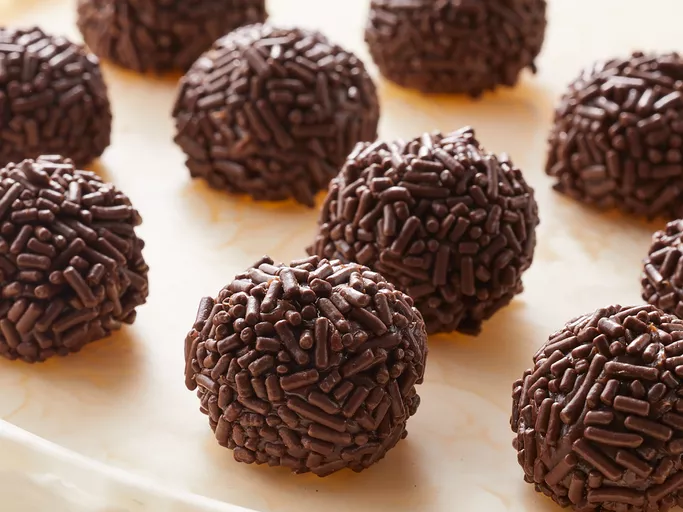

Brigadeiro

Description
Brigadeiro is a great Brazilian dessert similar to bonbons that's extremely scrumptious and delicious.
This sweet is loved here in Brazil. Try it! You can also make it in the microwave; just remember to stir every minute.
Ingredients
- Sweetened Condensed Milk:
1 (14 ounce) can.
- Unsweetened cocoa:
3 tablespoons.
- Butter:
1 tablespoon.
Steps
- Gather all ingredients.
- Combine condensed milk, cocoa, and butter in a medium saucepan over medium heat.
Cook and stir until thickened, about 10 minutes.
Remove from heat and let rest until mixture is cool enough to handle.
- Use your hands to shape into small balls and place on a serving plate. Can be eaten at once or chilled until serving.